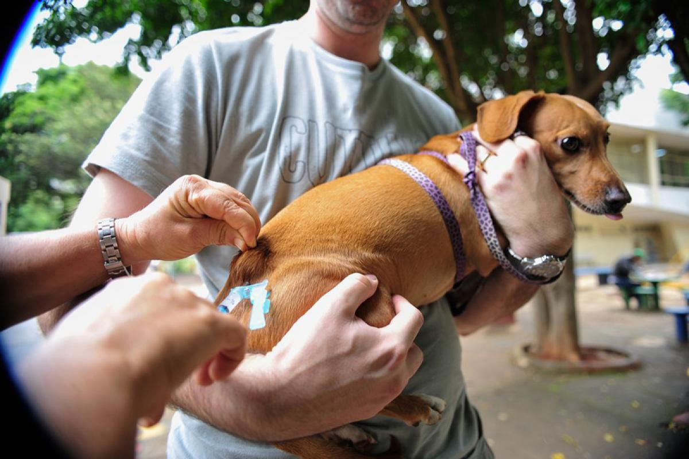
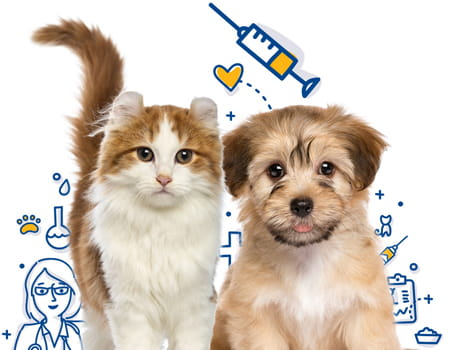

1. A importância da vacinação em animais
A vacinação previne o contágio do animal com agentes das doenças e permite que o pet possa manter a sua saúde em equilíbrio por mais tempo. O processo de vacinação em animais de estimação é muito importante, visto que algumas doenças podem acometer não somente aos pets, mas também aos seres humanos. Vacinar animais domésticos é um ato médico muito importante e uma responsabilidade de saúde pública.

2. Vacinação de cães e gatos
Cães e gatos, devem tomar todas as vacinas indicadas para filhotes, nos primeiros meses de vida, ou de acordo com o que o veterinário indicar, em casos de resgate e/ou adoção. A vacinação correta em animais domésticos pode protegê-los contra doenças infecciosas que podem chegar aos pets por vírus, bactérias, entre outros microrganismos. Para evitar problemas dessa natureza, é indicado que as vacinas para os pets sejam aplicadas corretamente, seguindo o calendário de vacinação, e acompanhadas por um médico veterinário de confiança

3. Frequência para vacinação dos pets
Existe uma grande variedade de vacinas para serem aplicadas em cães e gatos, no entanto, a frequência e o número podem depender da idade do animal de estimação. Assim como as crianças que nos primeiros meses de vida ou mesmo nos primeiros anos recebem várias doses de vacinas nos postos de saúde, os filhotes de cães e gatos também devem receber esse cuidado mais intenso nos seus primeiros 4 meses de vida. Cães e gatos adultos devem receber um reforço anual, normalmente sendo de 3 a 4 vacinas.
